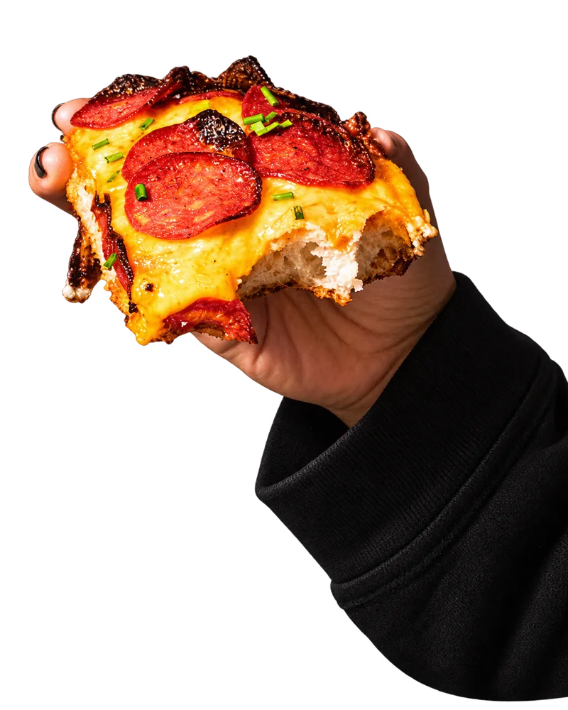
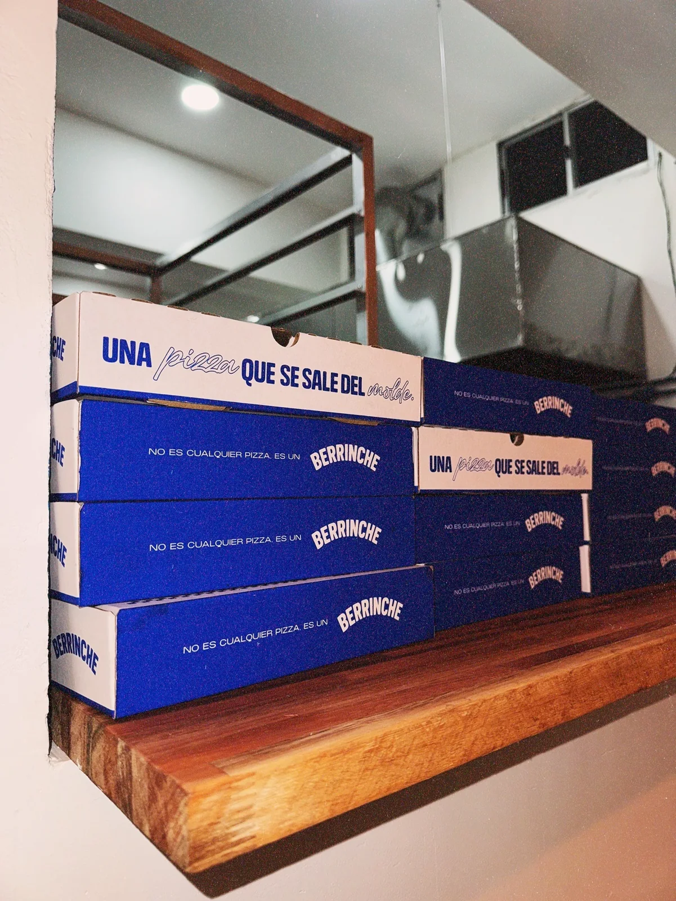

Elegí tu Berrinche.
Elegí de la carta y sumá
tus favoritos al carrito.
Estilo Detroit. Espíritu de barrio.
Y unas ganas serias de hacerte feliz.

Lo de compartir
lo vemos después. ↙
02 / Del antojo a la caja
Armá tu carrito y enviá tu pedido.
Para retirar o recibir.
Vos elegís el plan.
Elegí de la carta y sumá
tus favoritos al carrito.
Retiro por el local o delivery.
Completá tus datos y el medio de pago.
Seguí tu pedido en la web.
El resto del plan es tuyo.

03 / Hecho en el barrio
Una pizza distinta, una caja azul y un plan bastante simple: comer rico y pasarla bien.
Pizza al molde, humor medio malo y mucho Berrinche. Desde Av. Mariscal Francisco Solano López 1652, para donde pinte el plan.
El día a día en InstagramNo vino a caer bien.
La pizza, sí.
04 / Nos vemos en el barrio
Miércoles a domingo · 20:00 a 23:45
Mapa disponible desde el enlace de ubicación.
Abrir ubicación en Google Maps ↗Por si te lo preguntabas
Una pizza al molde, rectangular, de masa alta y esponjosa, con un borde dorado que también es parte del asunto.
Las dos. Elegí el servicio al pedir o escribinos para consultar cobertura, costo y tiempo de envío.
En la página de la carta podés elegir pizzas, fainá y bebidas, sumarlas al carrito y seguir su estado en la web. El local confirma el pedido al pasar a preparación.
Armar mi pedido ↗